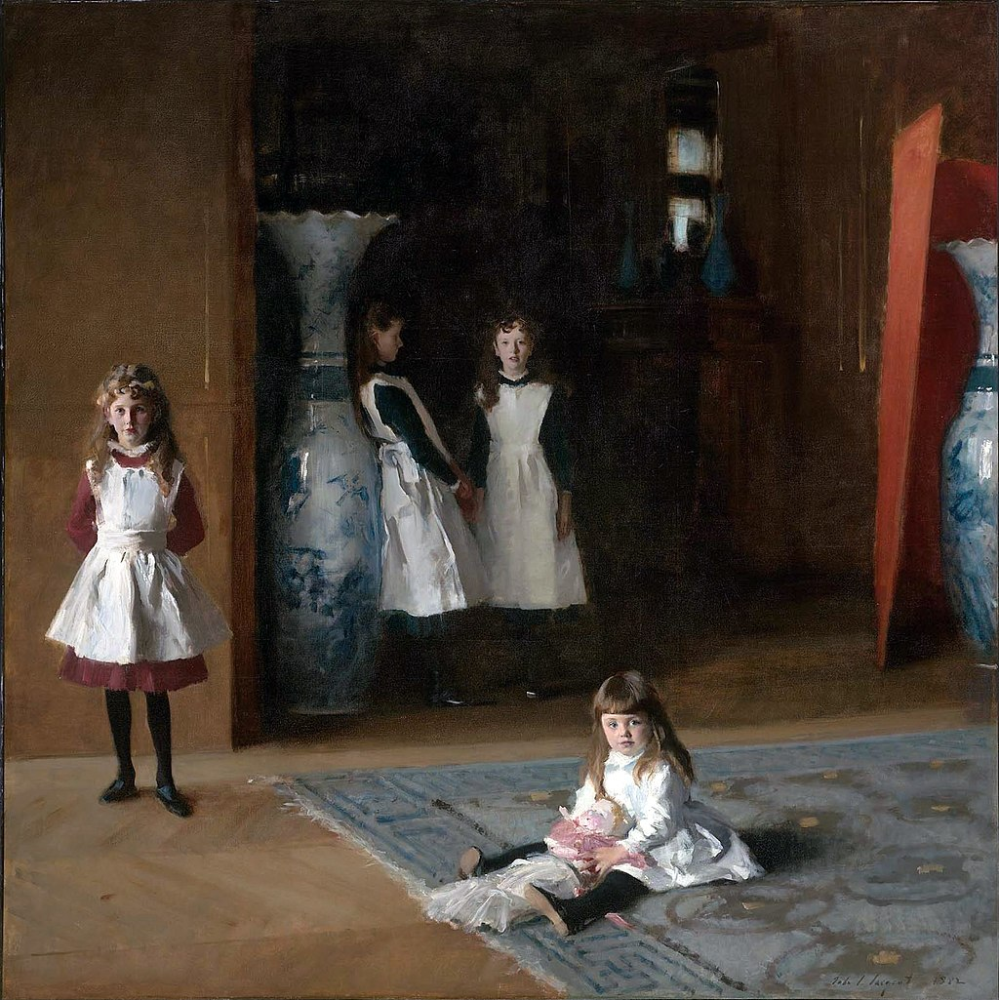

<head>
<meta charset="UTF-8" />
<meta name="keywords" content="drawing, painting" />
<meta name="description" content="drawings by Sunjy" />
<title>Sunjy</title>
<link rel="shortcut icon" type="image/x-icon" href="../../mImages/mCommon/favicon.ico" media="screen" />
<link rel="stylesheet" type="text/css" href="../../mCsses/mCommon/mCssA.css" />
<link rel="stylesheet" type="text/css" href="../../mCsses/mCommon/mCssB.css" />
<link rel="stylesheet" type="text/css" href="../../mCsses/mCommon/mCssC.css" />
<link rel="stylesheet" type="text/css" href="../../mCsses/mCommon/mCssD.css" />
<link rel="stylesheet" type="text/css" href="../../mCsses/mContent/mCssA.css" />
<link rel="stylesheet" type="text/css" href="../../mCsses/mContent/mCssB.css" />
<link rel="stylesheet" type="text/css" href="../../mCsses/mContent/mCssC.css" />
<link rel="stylesheet" type="text/css" href="../../mCsses/mContent/mCssD.css" />
</head>
<script type="text/javascript" src="../../mScripts/mContent/mContentAA.js" /></script>
<script type="text/javascript" src="../../mScripts/mContent/mContentAB.js" /></script>
<script type="text/javascript" src="../../mScripts/mContent/mContentAC.js" /></script>
<script type="text/javascript" src="../../mScripts/mContent/mContentAD.js" /></script>
<script type="text/javascript"></script> 
<script type="text/javascript">
document.write('<div class="mImgAbsolute"></div>');
/*
document.write('<p class="mFontSizeBColor" />From a white paper...</p>');
document.write('<table class="center"><tr><td>');
document.write('');
document.write('</td></tr></table>');
*/
</script>


<script type="text/javascript">
document.write('<p class="mFontSizeBColor" />The Daughters of Edward Darley Boit</p>');
document.write('<p class="mFontSizeSColor" />“The Daughters of Edward Darley Boit” by John Singer Sargent depicts four young girls, the daughters of Edward Darley Boit, in their family’s Paris apartment. <br><br>Dressed in white frocks, the most youthful, four-year-old Julia, sits on the floor, eight-year-old Mary Louisa stands at left, and the two oldest, Jane, aged twelve, and Florence, fourteen, stand in the background, partially obscured by shadow.<br><br>The painting’s composition was unusual at the time for a group portrait, both for the varying degrees of prominence given to the figures and for the square shape of the canvas.<br><br>A psychologically compelling painting, it is viewed as reflecting the ambiguities of adolescence. The older the girls are more hidden by the dark interior space than the younger girls.<br><br>The youngest has her face fully exposed to the light, and the eldest is shown in a dimly lit profile.  The older girls appear to be retreating from full view with increasing age.<br><br>The most extraordinary aspect of this portrait is its composition. Sargent presents each of the girls quite separately and has situated the girls so that they either confront or avoid the light from a sizeable unseen window.<br><br>It has been suggested that the large oriental blue-and-white vases are symbolic of the Boit parents.<br><br>Sargent seems to have given the girls distinct personalities and relationships, making this painting a psychologically compelling portrait on the ambiguities of adolescence.<br></p>');
document.write('<table class="center" /><tr><td>');
document.write('<br>Dressed in white frocks, the most youthful, four-year-old Julia, sits on the floor, eight-year-old Mary Louisa stands at left, and the two oldest, Jane, aged twelve, and Florence, fourteen, stand in the background, partially obscured by shadow.<br><br>The painting’s composition was unusual at the time for a group portrait, both for the varying degrees of prominence given to the figures and for the square shape of the canvas.<br><br>A psychologically compelling painting, it is viewed as reflecting the ambiguities of adolescence. The older the girls are more hidden by the dark interior space than the younger girls.<br><br>The youngest has her face fully exposed to the light, and the eldest is shown in a dimly lit profile.  The older girls appear to be retreating from full view with increasing age.<br><br>The most extraordinary aspect of this portrait is its composition. Sargent presents each of the girls quite separately and has situated the girls so that they either confront or avoid the light from a sizeable unseen window.<br><br>It has been suggested that the large oriental blue-and-white vases are symbolic of the Boit parents.<br><br>Sargent seems to have given the girls distinct personalities and relationships, making this painting a psychologically compelling portrait on the ambiguities of adolescence.<br>" />');
document.write('</td></tr></table>');
</script>


